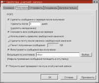
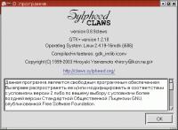

Дух ветра
(c)Петр 'Roxton'
СЕМИЛЕТОВ
Испокон веков для чтения и отсылки почты под
Линуксом я использовал программу Kmail, которая входит в поставку
любого дистрибутива, оснащенного графической оболочкой KDE. О другом
популярном e-mail клиенте, Sylpheed, разработанном японцем
Хироюки Ямамото и командой Sylpheed Claws, я слышал давно,
однако в силу врожденной лени не обращал внимания. А вчера вот
скачал... У буддистов есть такое понятие — «сатори», что
означает «мгновенное просветление». Меня как громом поразило!
Сильфида — один из лучших, если не самый лучший «почтовик»,
который я когда-либо видел!
Этап первый —
установка
Вот говорят, что под Линукс софт устанавливать сложнее, чем под
Windows. Давайте оценим ситуацию реально. Среднестатистический
пользователь Windows вначале скачивает программу, а потом
отправляется на известные сайты в поиске крэков, регистрационных
ключей, паролей и так далее. Убив кучу времени и своих денег на
провайдерском счету, пользователь обзаводится крэком, копирует его в
папку продукта, применяет, убеждается, что скачал крэк к другой
версии, опять лезет в Сеть и... Короче, хлопот много, а толку мало.
С точки зрения линуксоида такие проблемы кажутся, как любил
говаривать писатель Александр Куприн, бурей в клизме. Ведь
линуксоиду не надо искать крэки или «ключики». Потому, что
взламывать нечего — все уже бесплатно и даже в исходных кодах.
Поглядите, насколько просто устанавливается Сильфида. Сначала вы
скачиваете ее дистрибутив с http://sylpheed-claws.sourceforge.net/. Здесь надо
пояснить, чем отличается обычная Сильфида (http://sylpheed.good-day.net/) от версии
Claws. Claws — более «передовая» ветвь разработки, хотя
и менее стабильная. Оба варианта периодически синхронизируются на
определенных этапах разработки. Я использую Claws, поэтому и
говорить буду о ней. Но все сказанное касается и обычной
Сильфиды :-).
Продолжим. Распаковываете дистрибутив в какую-нибудь папку.
Исходники на языке Си. В «Мой компьютер» сейчас публикуется
серия статей о нем — вот будете знать, каков Си в действии на
примере Сильфиды (см. начатую нами серию статей Тихона
ТАРНАВСКОГО «Язык, на котором говорят везде», МК № 1-3, 5, 7, ???
(224-226, 228, 230, ???)).
Для успешной компиляции вам понадобится установить пакеты с
названиями вроде gtk-devel и glib-devel, которые входят в любой
дистрибутив Линукс. «Вроде» потому, что в разных дистрибутивах они
могут называться по-разному. Например, в Mandrake 9 это
glibc-devel-2.2.5-16.mdk, libgtk+1.2-devel-1.2.10-29mdk и
libgtk+2.0-devel-2.0.6-8mdk. Короче говоря, нужны developer-пакеты
библиотеки GTK+ и набора стандартных «сишных» библиотек Glib. Очень
вероятно, что они уже установлены. Еще можете инсталлировать yacc
(byacc) — он несколько расширит возможности
Сильфиды. Все это надо проделать до компиляции. Компилируем под
root'ом. Если вы сейчас не root, то войдите в систему как
root или используйте для этого временную меру — команду su.
Теперь из директории, куда вы распаковали дистрибутив Сильфиды,
даем на выполнение команду:
Запустился конфигурационный скрипт. Он, кроме всего прочего,
смотрит, какие нужные для компиляции библиотеки есть в вашей
системе, а каких нет. О чем сообщает лаконичными yes и no
напротив названия «проверяемой» библиотеки. А вы глядите и на ус
мотайте. В случае чего — установите недостающее. Если
конфигурирование прошло нормально, скрипт создаст необходимые для
компиляции файлы и напишет вам — мол, теперь наберите make для
компиляции. Последуем этому мудрому совету, введем команду:
Как обычно в таких случаях, можете отправиться на перекур —
процесс компиляции затяжной, и надо убить время. Когда вернетесь с
перекура, то вероятно обнаружите, что компиляция продолжается.
Памятуя, что одна сигарета убивает лошадь, а лошади куда здоровее
людей, вы не пойдете на второй перекур, а сварганите себе чашку кофе
и неспешно выпьете его. К тому времени компиляция успешно
завершится, и вам не останется ничего иного, кроме как
инсталлировать программу командой:
Все в порядке? Тогда запускаем Сильфиду командой sylpheed и
приступаем ко второму этапу:
Этап второй —
настройка
Сразу после первого запуска Сильфида выводит окно настроек
аккаунта (читай — почтового ящика). Причем с интерфейсом на
том языке, которым у вас локализирована Линукс. Одним словом, я был
приятно удивлен тем, что Сильфида обратилась ко мне по-русски. Особо
мудрить нечего — опции здесь те же, что в Outlook или
The Bat! Кстати, Сильфида очень напоминает последнюю. Или
наоборот. Только у Сильфиды интерфейс как бы более разжеванный.
Например, в опции, касающейся SMTP-сервера, сразу говорится, что
SMTP — это для отправки почты.
После создания в Сильфиде аккаунта происходит вот что:
1. В вашей домашней директории создается субдиректория
Mail, где Сильфида будет хранить вашу почту. Причем каждое письмо в
отдельном файле. Такой вариант имеет свои плюсы и минусы. Например,
в The Bat! письма хранятся в здоровенных таких
файлах-контейнерах, по одному на папку. Если The Bat! каким-то
образом исчезнет из вашей системы, весь ваш архив писем можно будет
разве что перочинным ножиком поковырять. И то безуспешно. А в
Сильфиде — вот они, все файлы налицо. Бери любой текстовый
редактор и смотри. Или просто заходите в директорию с письмами,
набираете: cat письмо такое-то.
2. В той же домашней директории создается скрытая
субдиректория под именем .sylpheed (с точкой в начале, потому что
директория скрытая) со всевозможными настройками программы в
.ini-подобных и .xml-файлах.
От технических аспектов вернемся к практическим и продолжим
конфигурирование Сильфиды. Просто коснусь неочевидных моментов,
которые пригодятся вам сразу же. Любители же подробностей могут
обратиться к поставляемой в комплекте дистрибутива документации.
Шаблоны ответа на письмо и форварда настраиваются
не в Конфигурация > Шаблоны (как можно было
предположить), а в Конфигурация > Основные >
Очередь. Там есть секции Формат ответа и Формат
пересылки. К слову, Сильфида может вставить в такой шаблон не
только макросы, но также текст из внешнего файла или даже
текстовый вывод какой-нибудь программы — для фанатов случайных
сигнатур в

конце письма.
Рядом с закладкой «Очередь» находится другая, более важная —
Отображение. Важна она потому, что тут задаются шрифты,
которые используются при наборе и отображении писем. По умолчанию
стоят нерусские, поэтому выберите сами те, что поддерживают
кириллицу. Разумеется, в кодировке вашей локали — например,
KOI8-R.
И последняя страничка опций, которая нас сейчас
заинтересует — это Другое. Сильфида не оснащена
встроенным HTML-браузером (однако прикрепленные картинки показывать
умеет), поэтому в списке Обозреватель выбираем
браузер, которым по вашему желанию будут отображаться
HTML-документы и документация к Сильфиде. Также выбираем внешнюю
утилиту для печати и внешний редактор, если вам чем-то не угодил
встроенный. Главное, чтобы он сохранял файлы в формате обычного
текста (plain text).
Как и любая популярная среди масс программа, Сильфида
поддерживает... Нет, не скины. Наборы кнопок для тулбаров —
темы, которые вы можете скачать с http://sylpheed-claws.sourceforge.net/themes.html.
Процедура их установки не особенно прозрачна для новичков, поэтому
опишу ее. Сначала нужно создать в директории ./sylphid новую
директорию с именем themes. Затем распаковываете туда скачанные
темы. Одна субдиректория — одна тема. Если Сильфида в это время
запущена, ее надо перезапустить, чтобы она «увидела» темы. В
Сильфиде идем в Конфигурация > Основные >
Интерфейс > Тема иконок. Это список, где выбираете
нужную тему. Затем нажимаем кнопку Применить и наслаждаемся
результатом.
Этап третий, длиною с
жизнь: использование
Говорить о фишках Сильфиды можно долго, очень долго. Хватило бы
текста на штук пять таких статей, как эта. Я же ограничусь рассказом
о тех возможностях Сильфиды, которыми она меня навек пленила.
Первое, что бросается в глаза — это скорость работы программы.
Быстр и запуск, и работа с письмами. Вторая замечательная
вещь — это фильтры. Сильфиду можно настроить таким образом,
чтобы фильтрация входящей почты происходила еще на сервере. Зачем
тянуть спам, зачем «вручную» выискивать его, если можно натравить на
него фильтры? Например, увидит Сильфида на почтовом севере письмо с
заголовком «персонально для вас» с рекламой очередного лохотрона
и — бабах! Нет письма. Враг не пройдет! Снайпер бьет издалека,
но зато

наверняка (советский плакат 40-х годов).
Работа с кодировками в иностранных продуктах всегда была головной
болью для отечественных пользователей. Но поскольку Линукс —
система интернациональная, то и разработчики тоже из разных стран, а
значит, пишут софт для всех. Сильфида отлично справляется с русскими
кодировками. Кроме того, в силу исторических и географических
обстоятельств налицо значительный уклон в поддержку кодировок стран
Востока — Китай, Корея, Япония. Еще такой любопытный
факт — вы можете самостоятельно частично «локализировать»
интерфейс на любой язык, благо Сильфида позволяет изменять надписи
кнопок на тулбарах (в Конфигурация > Другие
настройки).
Настройка горячих клавиш — удобнее и логичнее нельзя себе
представить. Дело в том, что движок графического интерфейса GTK
предоставляет уникальную фишку — чтобы закрепить за неким
пунктом меню сочетание клавиш, надо указать мышью на этот пункт меню
и нажать клавиши, которые вы хотите присвоить. Все гениальное
просто!
Заключение
Сильфида — отнюдь не малоизвестный продукт, а напротив,
быстро развивающийся с завоевывающий все новые и новые просторы.
Сильфида уже работает не только в Линуксе, но и под такими системами
как Free/OpenBSD, Solaris, IRIX (рабочая
система на Silicon Graphics), HP-UX, Tru64 Unix,
MacOS X и даже, хотя и окольными путями, — в
Windows. Сильфида является не только почтовым, но и новостным
клиентом. На эту программу реально можно «мигрировать». А если от
этого шага вас ограждает перспектива утери адресных книг, то нечего
волноваться — зайдите в директорию tools дистрибутива Сильфиды
и воспользуйтесь одним из предоставленных там скриптов для импорта
адресных книг. Поддерживаются такие «мылеры» как Outlook, Kmail и
The Bat! (правда, в самой «крысе» сначала придется
экспортировать адресную книг в .csv-формат).
Остается сказать разработчику Сильфиды Хироюки Ямамото
звучное слово «аригато!» — что по-японски значит «спасибо».